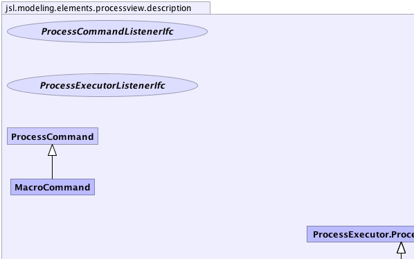
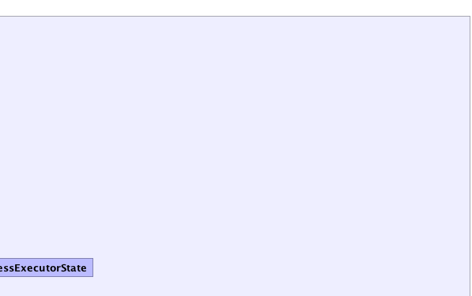
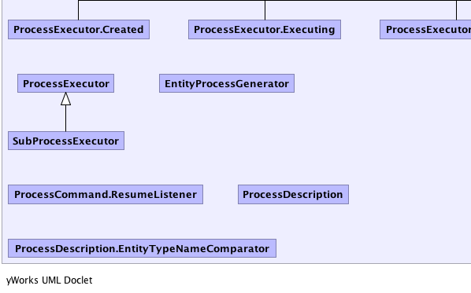
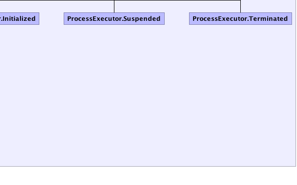

|
||||||||||
| PREV PACKAGE NEXT PACKAGE | FRAMES NO FRAMES | |||||||||
| Interface Summary | |
|---|---|
| ProcessCommandListenerIfc | A ProcessCommandListener can be notified before or after a command is executed. |
| ProcessExecutorListenerIfc | A ProcessExecutorListener can be notified when the ProcessExecutor is started and after it is terminated. |
| Class Summary | |
|---|---|
| EntityProcessGenerator | |
| MacroCommand | |
| ProcessCommand | |
| ProcessDescription | |
| ProcessExecutor | |
| SubProcessExecutor | |
|  |  |
|  |  |
|
||||||||||
| PREV PACKAGE NEXT PACKAGE | FRAMES NO FRAMES | |||||||||